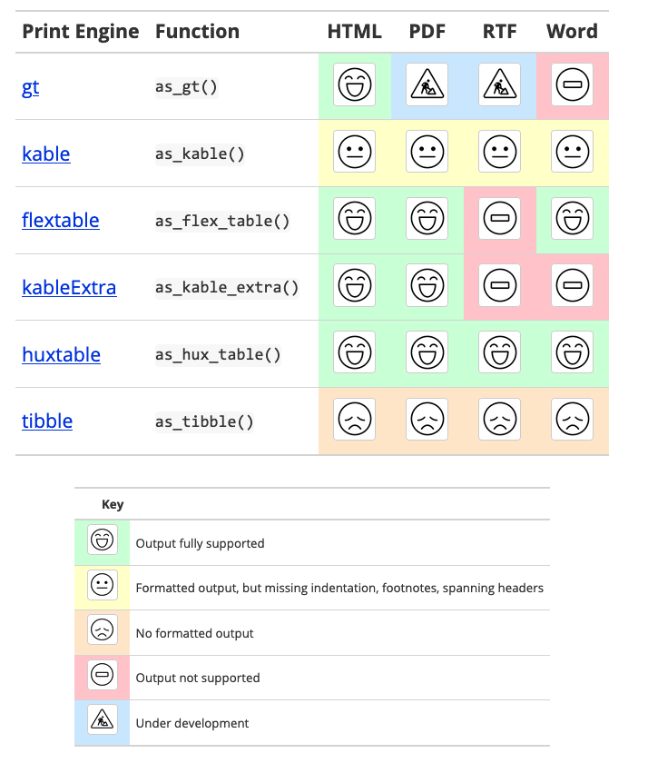

Preparing a manuscript for publication using bookdown
Lessons learned when we used {bookdown} to prepare a manuscript to submit for publishing.
My co-authors Ryan, Emily, Jesse, Josh, and I published our book last year, but Data Science in Education Using R is also available online as a bookdown on a website, available to all.
{bookdown} is an R package that facilitates writing books and long-form articles/reports with R Markdown. R Markdown is a file format that allows you to write using markdown, a language for formatted text, and integrate R code, analyses, and visualizations. By using R Markdown, my co-authors and I were able to collaborate using familiar scripts, share and run code, and edit our manuscript for publication. By using {bookdown}, we were able to publish these R Markdown files to the web so people could access our book as we were writing it.
We have written a few times about the open and collaborative nature of this work. This article will walk through the more technical aspects of using {bookdown} from our beginners’ standpoint. We hope it highlights the lessons we learned along the way. To peek at the actual files of our book, check out the GitHub repo.
So without further ado, here are some tips about {bookdown} that may be helpful on your book manuscript creation:
- Learning R Markdown and {bookdown}
- Snooping on others’ GitHub files
- Caching Code Chunks
- Figuring out your publisher’s requirements
- Determining how to collaborate
Learning R Markdown and {bookdown}
The first place to start to learn {bookdown} is Yihui Xie’s bookdown: Authoring Books and Technical Documents with R Markdown. In addition to going into {bookdown}, it provides some information on R Markdown and how to use it as well.
If you are new to R Markdown, Yihui, J. J. Allaire, and Garrett Grolemund wrote a definitive guide, available here.
These books offer great guidance on {bookdown} and R Markdown, but below are some details if you want to get started with a minimal example of a bookdown.
OK, you installed {bookdown}. Now what?
You may notice that a lot of tutorials have you start using {bookdown} with a demo project. This is certainly one way to start - exploring the demo project and changing things to see how your book changes when it’s re-rendered. As far as I know, there is no standard template to begin a bookdown. The bare minimum of what you need is an index.Rmd file, your other R Markdown files, a _bookdown.yml file, and _output.yml.
index.Rmd
In your project folder, start with an index.Rmd file with title, author, site, and output in the YAML header of the file (the YAML header is the top part of the R Markdown file, see here between the ---).
---
title: "Test Book"
author: "Me"
site: bookdown::bookdown_site
output: bookdown::gitbook
---Below the YAML header, you can use regular R Markdown syntax. Start it off with a first-level header. If you do not want it to be numbered, write {-} beside the header.
# Welcome {-}This will be the first page of your rendered book.
Other R Markdown files
Besides index.Rmd, other R Markdown files will make up the chapters of your book. By default, bookdown merges all Rmd files by the order of filenames, e.g., 01-intro.Rmd will appear before 02-literature.Rmd. As referenced in Yihui’s book, we named our files with a number first (see here].
Some tips:
We recommend each R Markdown file have only one first-level header; otherwise, your chapters will be cut off at any first-level header if you use the K-M rendering approach (see here). Do not use the same first-level header in the same bookdown!
_bookdown.yml
Hey, did you notice there’s an underscore in the file name? I didn’t and spent an hour trying to figure out why the book wouldn’t render. So another tip, underscores are important :)
The _bookdown.yml file does not need much. Critical is the book_filename - we used main.Rmd. Here, you also specify the rendering method you would like (mentioned above), and also whether you want to delete the merged file (we recommend yes).
book_filename: "bookdown-demo"
delete_merged_file: true
new_session: yesBesides this, you can add labels to figures and chapters, add scripts to run before each R Markdown file, change the order of your chapters manually (remember, by default it will be index.Rmd then by alphabetical order), and a lot more - but all of that is optional.
_output.yml
Oh heyy, another underscore!
This file will output your file according to what is specified. It’s also how figure height/width is specified, allows you to specify the TOC, etc. But really, if you want a bookdown all it needs is to know what you want your output to be.
bookdown::gitbookRendering the book
OKAY! So you have your files and the bare minimum of what you need to create a bookdown. To see it, go ahead and run:
bookdown::serve_book()So now you have a bookdown! And you eagerly look at your accomplishment and it is great. But how do we find out what else we can do with {bookdown}?
Snooping on others’ GitHub files
When I do not know how to do something in R, I look at people who I want to emulate and snoop on their GitHub repository pages. It is so incredibly handy (and wonderful) that others post their code for all to see.
This is how we learned just how to even start using bookdown (copying people’s files, seeing what happened when we ran them), but also the creative ways that others went about customizing their books.
While there’s an archive of many books using {bookdown}, here are some specific works we used during our bookdown development:
- Forecasting: Principles and Practice by Rob J Hyndman and George Athanasopoulos (book, repo) for customizing CSS on a bookdown with custom fonts, colors, etc.
- Geocomputation with R by Robin Lovelace, Jakub Nowosad, and Jannes Muenchow (book, repo) to learn how to give figures labels.
We highly recommend seeing what others have done in the past and trying things out so your book reflects what you would like it to look like!
Customizing CSS
Speaking of CSS, this is a nice way to make your bookdown your own. Once you add a css/style.css file in your bookdown repository, you can add css: css/style.css in your _output.yml file. Then, anytime your book renders, it will reference your CSS file. While not explicitly necessary for a manuscript (at least not ours), it is nice to customize one’s work.
Wait, what if I don’t know CSS?
Do not fret, reader. I also do not know CSS. But thankfully, the Google Developer Tool exists.
By right-clicking any part of a web page (including an existing bookdown) in Chrome, you can then click “Inspect Element” to see its HTML file and the hierarchy of the thing you just right-clicked on. Then, by clicking the arrow on the top left of your Inspector pane, you can click on anything to see its HTML file.
This, and a combination of snooping on GitHub, allowed us to find ways to customize our bookdown. Here is where ours is located and where you can see what is referenced and changed with CSS. For example, this bit of code is saying for the book left-hand pane, when hovering, make the color white and the text #ffbc49.
.book .book-summary ul.summary li a:hover {
background-color: #ffffff;
color: #ffbc49;
}This process takes a lot of trial and error, I will admit. It may be easier to pick up a bit of CSS if you have specific ideas in mind. However, if you need a quick edit of some pages, seeing how others have done it and exploring with the Developer Tools is very handy.
Caching code chunks
As mentioned in Yihui’s book, you can cache certain code chunks so they do not have to rerun each time you render the book. We found this very handy, as some complex models took some time to run.
Important to note though: if you use set.seed, you will need to include it in every code chunk; setting it in only one code chunk will not mean it is set for all code chunks.
Figuring out your publisher’s requirements
Creating a book using R/R Studio/{bookdown} is great because all of these tools are so versatile and we were able to use each one to meet our publisher requirements, minimize manual work, and reduce redundancies.
For example, here’s how {bookdown} helped us do what we had to do:
- Our manuscript had to be in Word: we were able to render the bookdown using Word.
- Our manuscript needed all tables and figures to be labeled: we were able to automate this using the
.ymlfiles. - Our figures had to be of a certain size and dimension: we were also able to automate this using the
.ymlfiles. - We needed to send all of our figures separately from the manuscript: they are all saved separately due to the rendering function of {bookdown}.
- We needed a bibliography: we were able to create a bibliography of works and packages, all automated with {bookdown}.
Because of R:
- All tables had to be in Word format: at the time, we hadn’t seen this from {gtsummary}, and we spent quite a bit of time trying to use {gt} for our tables before realizing that we wouldn’t be able to output using Word. We then switched to {sjPlot}, which got us exactly what we needed.

- Our bibliography had to be in APA format: thanks to a file that Josh had (saved here), all we had to do was save that file and add
biblio-style: "apalike"to ourindex.Rmdfile for everything to show up in the format we needed.
And, thanks to R Studio:
- We were able to spell-check files within the IDE!
- We used its handy search function to create the index.
So, we recommend gathering all of your publisher’s requirements and then mapping them to the different tools at your disposal. This saves a lot of time and headache when it’s finally time to send over the final manuscript.
Determining how to collaborate
Since my co-authors and I all knew GitHub, we decided to use GitHub to write the book. This was great because it was a transparent way of writing the book (non-authors added issues and contributed as they saw fit). We were able to go back in time if needed to fix errors or see what had been changed.
We had to decide how updating the book would work. Ultimately, we decided that one person would be in charge of rendering the book - this helped reduce any code conflicts. However, there may be other ways of working that would be better for you.
Conclusion
In conclusion, we chose to use {bookdown} to create a book manuscript because we wanted to be transparent in our work, leverage R and its many tools, and be as efficient as possible when writing a book across five people. Despite some technical lift (and a lot of trial and error), it eventually resulted in a smooth workflow for our group. Thanks to the many resources and code available out there, we were able to learn {bookdown} as we wrote. Thanks to {bookdown}, we output the final manuscript that resulted in our book!
New blogpost! 🎉 We created our book's manuscript using #rstats and #bookdown! How did we learn how to do it? #1 tip: snoop on other people's GitHub repos 👀 Read more here: https://t.co/jSozoz86gj
— Isabella Velásquez (@ivelasq3) March 9, 2021